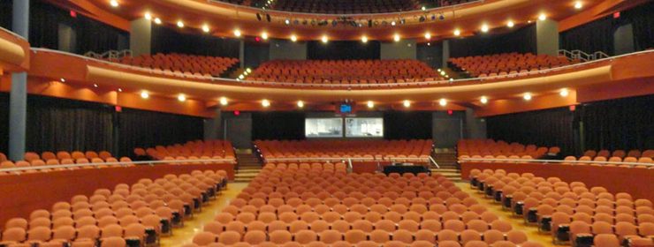

Campus Events

This page will get updated every week with new campus events for you to go to. Keep updated with all events taking place on campus which you are more than welcome to use for your campus engagements. If you have any questions about times/locations feel free to contact me and I'll help you find the answers! (Some events don't have links). It's also worth noting that there are many more events you could go to that would count. So feel free to attend something not on the list!
- ALL WEEK: "Troika in Cuba: Soul Deep", UNI Gallery of Art, Thursday, October 27, 2016 - 6:00 pm to Monday, November 28, 2016 - 7:00 pm
- 10/31: RCR 5: Exploring Cross-Cultural Ethics in Scholarship, Elm Room, Maucker Union, Monday, October 31, 2016 - 12:00 pm
- 10/31: UNI Viola Studio Recital, Davis Hall, GBPAC, Monday, October 31, 2016 - 6:00 pm
- 10/31: Instrumental Concerto Competition Finals, Great Hall, GBPAC, Monday, October 31, 2016 - 7:30 pm
- 11/1: UNI PRSSA hosts Katie Patterson, Room 109, Curris Business Building, Tuesday, November 1, 2016 - 4:00 pm
- 11/1: Guest Artist Recital:
Spiritual Standards
- Markus Burger, piano and Jan von Klewitz, saxophone, Bengtson Auditorium, Russell Hall, Tuesday, November 1, 2016 - 6:00 pm - 11/1: Faculty Recital: Amanda McCandless, clarinet, Davis Hall, GBPAC, Tuesday, November 1, 2016 - 6:00 pm
- 11/1: Spotlight Series: Concert Chorale and UNI Singers, Great Hall, GBPAC, Tuesday, November 1, 2016 - 7:30 pm
- 11/2: UNI-NCBI Leadership for Diversity and Inclusion Workshop, Room 301, Rod Library, Wednesday, November 2, 2016 -9:00 am to 4:00 pm
- 11/2: Fall Graduation Fair, Old Central Ballrooms A and B, Maucker Union, Wednesday, November 2, 2016 -10:00 am to 3:00 pm
- 11/2: Wheaton Wellness Session: Diabetes, Room 009, Gilchrist Hall, Wednesday, November 2, 2016 - 12:00 pm
- 11/2: Diversity Colloquium: Managing Emotions in the Classroom in an Era of Inequality, Room 287, Rod Library, Wednesday, November 2, 2016 - 12:00 pm
- 11/2: UNI Teacher Education Induction Convocation, Great Hall, GBPAC, Wednesday, November 2, 2016 - 4:00 pm
- 11/2: Camp Adventure Info Session, Maucker Union (by Chats), Wednesday, November 2, 2016 - 5:00 pm to 8:00 pm
- 11/2: Guest Artist Recital: Anibal dos Santos, viola, Davis Hall, GBPAC, Wednesday, November 2, 2016 - 8:00 pm
- 11/3: The Way Up Conference - 30th Anniversary, The Marriott Hotel and Conference Center, Coralville, Thursday, November 3, 2016 - 8:00 am to Friday, November 4, 2016 - 1:00 pm
- 11/3: Using surveys in data collection, Room 324, Rod Library, Thursday, November 3, 2016 - 12:15 pm
- 11/3: International Coffee Hour, Room 113, Maucker Union, Thursday, November 3, 2016 - 3:00 pm
- 11/3: Chemistry and Biochemistry Department Seminar, Room 201, McCollum Science Hall, Thursday, November 3, 2016 - 4:00 pm
- 11/3: Artists' Lecture: Karen Graffeo and Julio Larramendi, Kamerick Art Building, room 111, Thursday, November 3, 2016 - 6:00 pm
- 11/3: TheatreUNI: Twelfth Night, Strayer-Wood, Thursday, November 3, 2016 - 7:30 pm
- 11/3: Observatory Show, Room 137, McCollum Science Hall, Thursday, November 3, 2016 - 9:00 pm to 10:00 pm
- 11/4: Bosnian Culture and How to Pronounce Bosnian Names, Room 378, Rod Library, Friday, November 4, 2016 - 12:00 pm
- 11/4: UNI Swimming & Diving vs. South Dakota, Glen F. Henry Swimming & Diving Pool (WRC), Friday, November 4, 2016 - 5:00 pm
- 11/4: First Friday, Coffeehouse, Maucker Union, Friday, November 4, 2016 - 5:00 pm
- 11/4: UNI Cantorei, Great Reading Room, Seerley Hall, Friday, November 4, 2016 - 6:00 pm
- 11/4: UNI Jazz Band One, Bengtson Auditorium, Russell Hall, Friday, November 4, 2016 - 7:30 pm
- 11/4: TheatreUNI: Twelfth Night, Strayer-Wood, Friday, November 4, 2016 - 7:30 pm
- 11/5: Viola Festival, Davis Hall, GBPAC, Saturday, November 5, 2016 (All day)
- 11/5: UNI Community Music School Recital Weekend, Russell Hall, Saturday, November 5, 2016 (All day) to Sunday, November 6, 2016 (All day)
- 11/5: Educating Educators 2016--Multicultural Teaching in Iowa: Becoming Prepared for the Changing Demographics, Center for Energy & Environmental Education, Saturday, November 5, 2016 - 8:00 am
- 11/5: Country Unplugged Featuring: Mark Chesnutt, Lorrie Morgan, and Joe Diffie, Gallagher Bluedorn Performing Arts Center, Saturday, November 5, 2016 - 7:00 pm
- 11/5: UNI Volleyball vs. Drake, McLeod Center, Saturday, November 5, 2016 - 7:00 pm
- 11/5: TheatreUNI: Twelfth Night, Strayer-Wood, Saturday, November 5, 2016 - 7:30 pm
- 11/6: TheatreUNI: Twelfth Night, Strayer-Wood, Sunday, November 6, 2016 - 2:00 pm